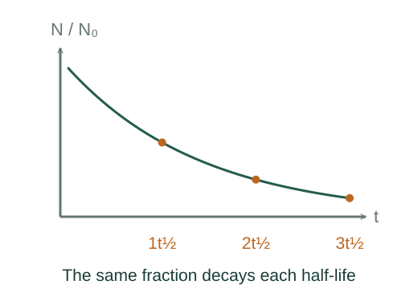

Derive exponential radioactive decay and half-life
A constant decay probability per nucleus per unit time makes the loss rate proportional to the number remaining. Solving that rate equation gives exponential decay.
What the symbols mean
N: expected number of undecayed parent nuclei; : decay constant (s⁻¹); A: activity in becquerels; t½: half-life.
When this applies
Independent nuclei with a constant decay constant and no replenishment of the parent population. The equation gives expectation values for a stochastic process.
Developing the argument

Translate constant probability into a rate
During a short interval dt, each remaining nucleus has probability dt of decaying. The expected number lost is therefore λdN dt.
Separate variables and integrate
Divide by N and integrate from N₀ to N. The logarithm of the remaining fraction is linear in time.
Define activity
Activity is the positive expected decay rate, so it is minus the derivative of the parent count.
Solve for half the initial population
At one half-life, N/N₀ = 1/2. The logarithm gives λdt½ = ln 2. Repeated half-lives multiply the remaining fraction by another half.
A worked example
A sample with half-life 10 days has one eighth of its original expected parent population after 30 days. Its activity is also one eighth.
Derivation behind this calculation ↗A point to keep straight
Half-life does not predict when an individual nucleus will decay. Daughter activity may need a separate coupled-decay calculation.
Check the assumptions and derivation ↗